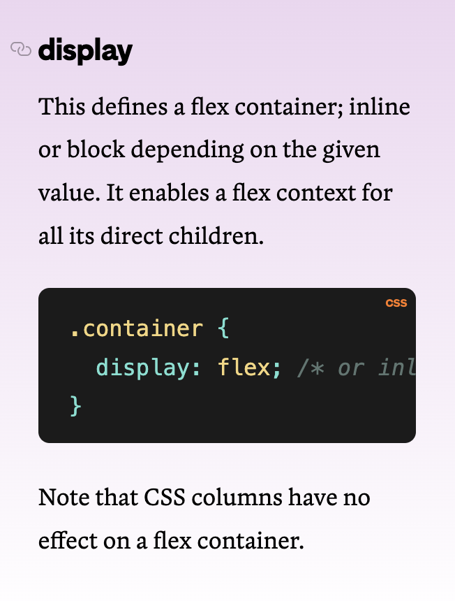
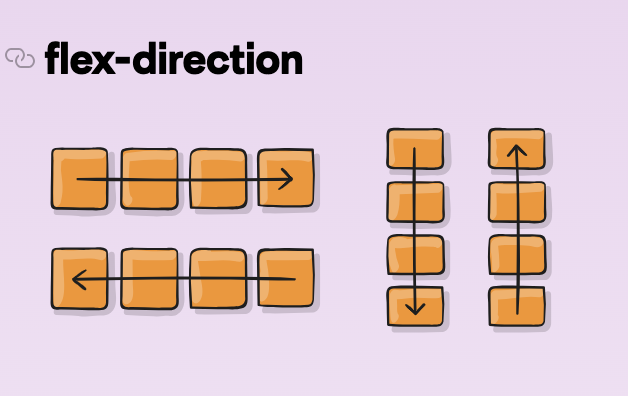
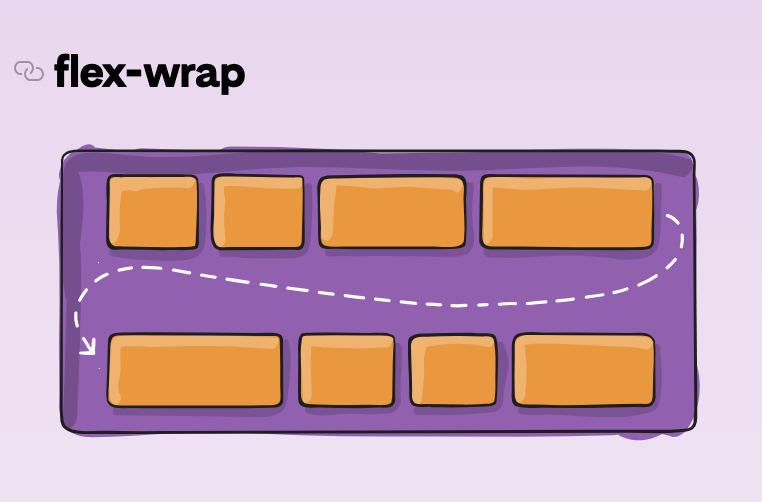
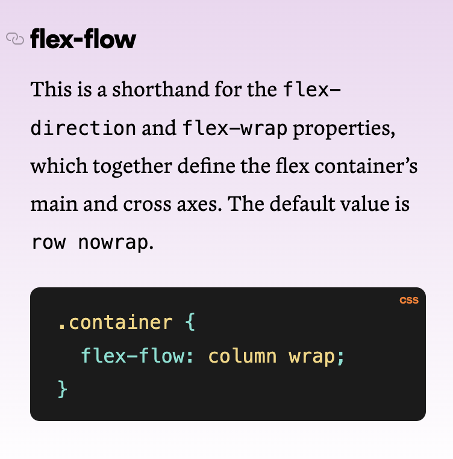
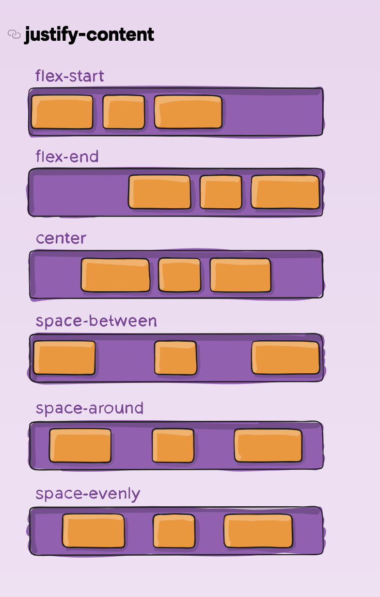
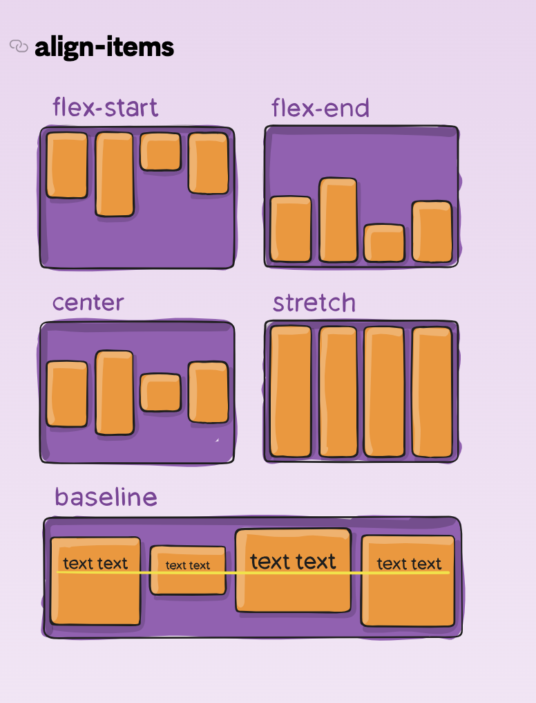
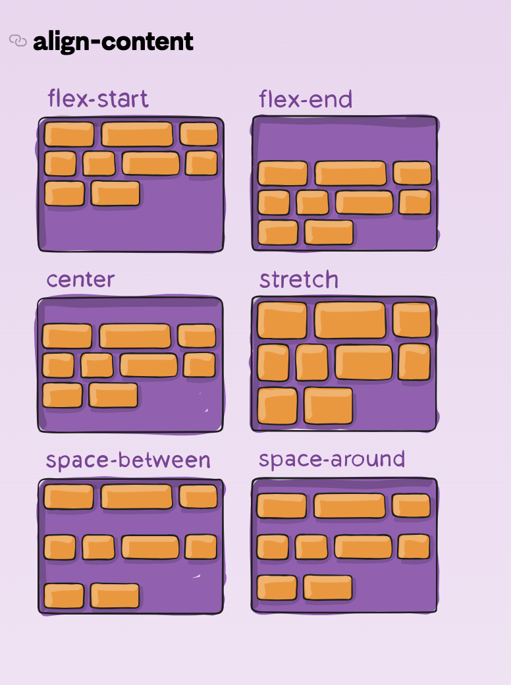
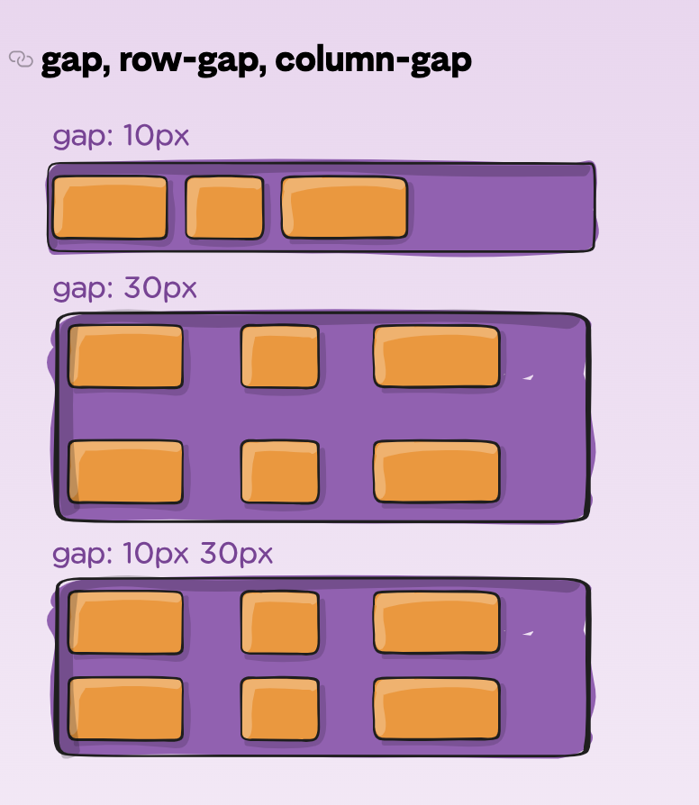

Modulul de layout cutie flexibilă (denumit de obicei flexbox) este un model de layout unidimensional pentru distribuirea spațiului între articole și include numeroase capacități de aliniere.
Ideea principală din spatele aspectului flexibil este de a oferi containerului capacitatea de a modifica lățimea/înălțimea articolelor (și ordinea) pentru a umple cel mai bine spațiul disponibil (mai ales pentru a se adapta la toate tipurile de dispozitive de afișare și dimensiuni de ecran). Un container flexibil extinde articolele pentru a umple spațiul liber disponibil sau le micșorează pentru a preveni debordarea.
Display - Aceasta definește un container flexibil; inline sau bloc în funcție de valoarea dată. Permite un context flexibil pentru toți copiii săi direcți.
Flex-direction - aceasta stabilește axa principală, definind astfel direcția în care articolele flexibile sunt plasate în containerul flexibil. Flexbox este (pe lângă împachetarea opțională) un concept de aspect cu o singură direcție. Articolele flexibile sunt așezate în principal fie în rânduri orizontale, fie în coloane verticale.
Flex-wrap - În mod implicit, elementele flexibile vor încerca să se potrivească pe o singură linie. Puteți modifica acest lucru și permite articolelor să se împacheteze după cum este necesar cu această proprietate.
Flex-flow - Aceasta este o prescurtare pentru proprietățile flex-direction și flex-wrap, care împreună definesc axele principale și transversale ale containerului flexibil. Valoarea implicită este row nowrap.
Justify-content - Aceasta definește alinierea de-a lungul axei principale. Ajută la distribuirea spațiului liber suplimentar rămas atunci când fie toate elementele flexibile de pe o linie sunt inflexibile, fie sunt flexibile, dar au atins dimensiunea maximă. De asemenea, exercită un anumit control asupra alinierii elementelor atunci când depășesc linia.
Align-items - Aceasta definește comportamentul implicit pentru modul în care elementele flexibile sunt așezate de-a lungul axei transversale pe linia curentă. Gândiți-vă la aceasta ca la versiunea de conținut justificat pentru axa transversală (perpendiculară pe axa principală).
Align-content - Acest lucru aliniază liniile unui container flexibil atunci când există spațiu suplimentar pe axa transversală, similar modului în care justify-content aliniază articolele individuale în axa principală. Această proprietate are efect numai pentru containerele flexibile cu mai multe linii.
gap, row-gap, column-gap - Proprietatea gap controlează în mod explicit spațiul dintre elementele flexibile. Se aplică acea distanță numai între elemente, nu pe marginile exterioare. Nu este exclusiv pentru flexbox, gap funcționează și în aspectul grilă și cu mai multe coloane.
